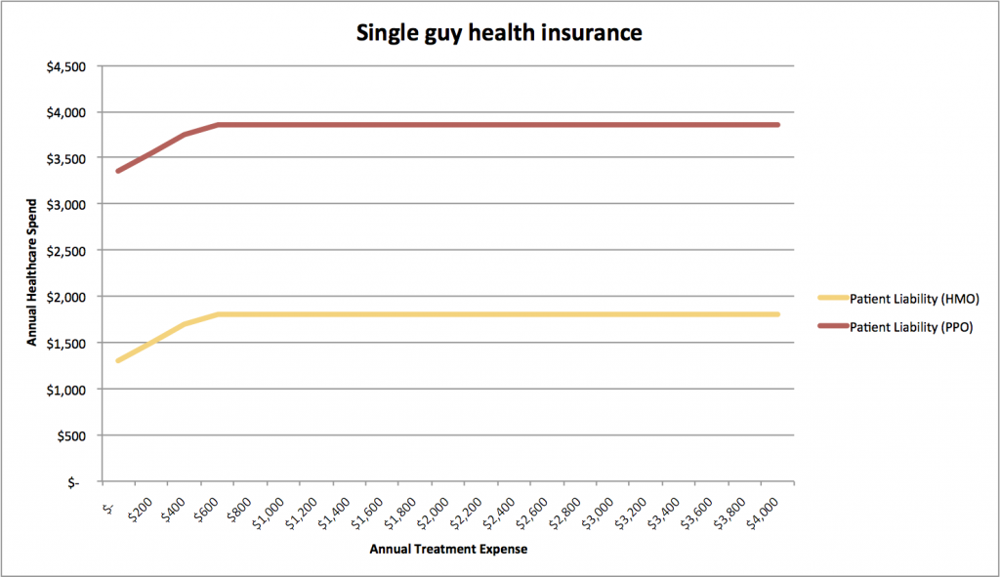
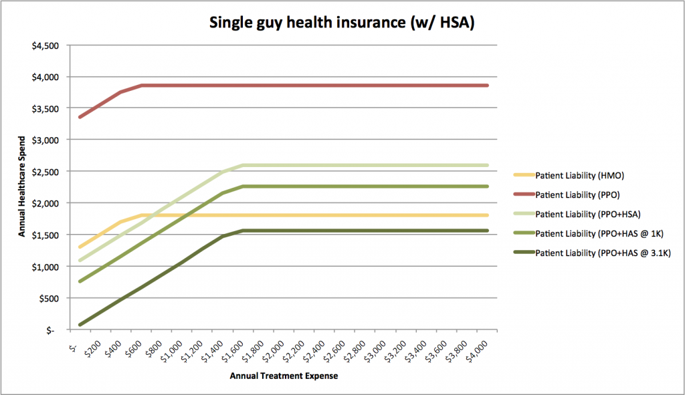

Buying health insurance, Part II -- The single guy
insuranceI am a single man in my late 20s. I run marathons for fun, I don't have any chronic diseases, and I am financially stable. And I avoid unnecessary doctor-visits at all costs. This is starting to sound like an eHarmony dating profile...
Basically, I expect to consume almost no healthcare next year, and I am insuring against the unlikely possibility that I contract a serious and expensive disease like cancer. All things being equal, I would prefer a PPO --- in the unlikely event that I get leukemia, I'd rather go to the oncologist I want instead of the oncologist who is cheapest for my insurer.
So my healthcare needs are relatively easy to model.
I pay a premium out every paycheck. If I consume healthcare, I will probably pay --- depending on which plan I choose, I'll pay the first $500 or so of my medical costs, after which my insurer will pay most or all of the rest.
The most basic choice is a simple HMO vs. a simple PPO.
There are some differences in emergency room and prescription drug benefits between these two choices, but they appear relatively immaterial.
We can model how much I would pay under each plan in a variety of states of the world:
How to read this: If my healthcare in 2012 costs the amount on the x-axis, I will pay the amount on the y-axis. So if I consume $600 worth of healthcare, I'll pay about $1,800 with an HMO and $3,800 with a PPO (both in-network).
{kind=link}
Major discovery: I will pay about $2,000 per year for the option of out-of-network coverage.
Worth it? Probably not.
The plot thickens when we consider the more complicated PPO plan, which includes a Health Savings Account.
The quick and dirty version: if I agree to pay for more of my healthcare upfront ($1500 deductible versus $500), I get a savings account that I can only spend on healthcare.
My employer will contribute $375 per year to this account, and I can put in up to $3,100 every year, tax free. It works a lot like retirement account (investment options, early withdrawal penalties, etc. etc.). And in return for accepting more risk that I will have to foot the bill for minor healthcare stuff myself, I pay dramatically lower premiums.
The employer-contribution angle looks interesting --- my employer subsidizes my healthcare spending to the tune of $375.
The tax-free part looks more interesting.
I am fortunate enough to pay a relatively high marginal tax rate (33%), so the prospect of shielding some of my income from taxes is attractive. If you know of another way to get a 33% riskless return in a year, please drop me an email.
The tax-shield makes an HSA slightly complicated to analyze. I can afford to save at least $3K per year and I am fairly sure I will spend down my HSA at some point in the future when I have real healthcare expenses. So I will ignore the various constraints on using an HSA, and only examine the tax implications of contribution.
The more complex PPA+HSA plan turns out to be better than a plain-jane PPO in every case (strongly Paredo-optimal, if you are as big a stats nerd as me). It's also cheaper than an HMO if I consume minimal healthcare next year:
If I am willing to save the maximum ($3,100 per year), the complicated PPO is cheaper than an HMO in any scenario. Even if I spend a bundle on healthcare, I can still save $500 over managed care.
{kind=link}
So the plan that offer the best care (PPO + HSA) is actually substantially cheaper for me.